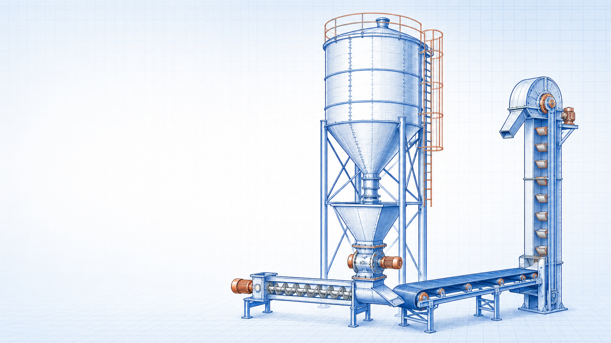

Bulk-materials engineering guide
Belt, Screw, Chain and Bucket Elevator Conveying Basics
Belt, Screw, Chain and Bucket Elevator Conveying Basics is a foundational bulk-materials engineering topic within Conveying Principles. It supports clear definition of the operating basis, selection of an appropriate method, and responsible preliminary engineering decisions.

- Content type
- Bulk-materials engineering guide
- Level
- Engineering › Material Handling and Bulk Solids › Conveying Principles › Mechanical Conveying › Belt, Screw, Chain and Bucket Elevator Conveying Basics
- Audience
- Student · Design engineer · Project engineer · Plant engineer
- Last reviewed
- 30 August 2026
What Is Belt, Screw, Chain and Bucket Elevator Conveying Basics?
Belt, Screw, Chain and Bucket Elevator Conveying Basics is a foundational bulk-materials engineering topic within Conveying Principles. It supports clear definition of the operating basis, selection of an appropriate method, and responsible preliminary engineering decisions.
Why Is It Important in Engineering?
This topic must be assessed in the context of its stated system boundary, operating condition, material or fluid basis, interfaces and applicable requirements. The title identifies the subject; the actual engineering result depends on verified project data and a method suitable for the service.
Key Terms and Definitions
- Belt, Screw, Chain and Bucket Elevator Conveying Basics
- The specific subject defined by this page title.
- Mechanical Conveying
- Use an applicable source definition and a declared service basis.
- Conveying Principles
- Use an applicable source definition and a declared service basis.
- Operating basis
- Use an applicable source definition and a declared service basis.
Fundamental Principle
This topic must be assessed in the context of its stated system boundary, operating condition, material or fluid basis, interfaces and applicable requirements. The title identifies the subject; the actual engineering result depends on verified project data and a method suitable for the service.
Formulae, Symbols and Units
Applicable engineering relationship
Use the documented method appropriate to the actual service.
Belt, Screw, Chain and Bucket Elevator Conveying Basics does not have one universal equation. Select the relationship, property source or standard that applies to the defined system and conditions.
Unit consistency
Use one declared unit system and state the condition basis of all properties, dimensions, loads and measurements.
Assumptions and Validity Range
- The selected method represents the actual duty and configuration.
- Inputs are current, traceable and compatible with the stated condition.
- Code, safety, supplier and project requirements are reviewed separately.
Factors Affecting the Result
Design basis
The defined duty, operating envelope and intended performance of Belt, Screw, Chain and Bucket Elevator Conveying Basics.
Physical context
The relevant geometry, material, fluid, equipment condition and process interfaces.
Project constraints
Applicable safety, reliability, maintainability, environmental and code requirements.
Step-by-Step Engineering Method
- Define the system boundary, duty and operating envelope for Belt, Screw, Chain and Bucket Elevator Conveying Basics.
- Collect verified drawings, process data, material/fluid information and interface conditions.
- Select an applicable source, equation, standard or supplier method.
- Complete the calculation or qualitative assessment on one consistent basis.
- Review limitations, safety implications, maintainability and the need for qualified sign-off.
Illustrative Engineering Example
Hypothetical example — not a design calculation
A team compares a preliminary option against the required duty. It first confirms the scope and inputs, applies a suitable documented method, and then checks the result with the relevant equipment, layout, safety and maintenance constraints.
Industrial Applications
- Concept selection and preliminary studies involving Belt, Screw, Chain and Bucket Elevator Conveying Basics.
- Design-basis development and cross-discipline coordination.
- Operation, inspection, troubleshooting and maintenance planning.
Common Mistakes and Limitations
- Using generic values without checking service conditions.
- Ignoring interfaces with equipment, structures, controls or safety systems.
- Treating an educational page as final project approval.
Frequently Asked Questions
Can this page be used for final design?
No. It is educational and preliminary reference material; final decisions need project data, applicable requirements and qualified engineering review.
What should be verified first?
Verify the actual service condition, geometry, material/fluid, loads and governing project or supplier basis.
Why are related resources included?
They show the context needed to avoid treating an individual topic as an isolated design decision.
Expanded technical guide
Engineering Basis and Practical Application
Belt, Screw, Chain and Bucket Elevator Conveying Basics must be assessed in the context of the complete system, not as an isolated component. A useful basis includes bulk-solid properties, capacity, inclination, transfer points, belt or chain speed, dust control and safety guarding. Bulk-solid systems require representative material testing, an appropriate storage and extraction boundary, and review of dust and guarding risks.
Define the physical and operating boundary before selecting equipment, interpreting a result or changing a set point. Consider start-up, normal operation, maximum duty, low-load operation, upset condition, maintenance, seasonal variation and credible future changes. One of these cases can govern capacity, reliability, safety, product quality, emission performance or serviceability.

Data and calculation discipline
Set the boundary
source → system → discharge or duty
Identify all interfaces, reference points and the actual decision supported by the assessment.
Use compatible inputs
result = appropriate method + representative data
State units, operating condition, source revision, material or service basis and expected uncertainty.
Review the governing case
normal case ≠ limiting case
Check the case that controls the capacity, reliability, safety or environmental constraint.
Verify with evidence
calculation ↔ field condition
Compare the assessment with measurements, inspection, supplier limits and controlled drawings.
Structured engineering method
- Define duty, boundary, required decision, applicable requirements and acceptance basis.
- Collect current drawings, data sheets, operating trends, material or service properties and maintenance findings.
- Set normal, minimum, maximum, start-up, upset and future operating cases relevant to Belt, Screw, Chain and Bucket Elevator Conveying Basics.
- Select a method that is valid for the actual service, geometry and condition.
- Check interfaces, controls, safety, access, maintenance and downstream consequences.
- Test uncertainty where a reasonable change in an input could alter the decision.
- Record the calculation, source data, limitations, required review and verification action.
Operation and reliability considerations
Condition
Track evidence of degradation before it affects duty, safety, quality or compliance.
Maintenance
Provide safe isolation, inspection, cleaning, lifting and spares for the actual installed arrangement.
Controls
Review alarms, trips, interlocks and manual actions for the full operating envelope.
Change control
Reassess after a material, load, layout, control or operating-procedure change.
Field checks
Use calibrated measurements at a defined location and condition basis.
Competent review
Escalate specialist, code, safety or supplier questions outside this educational scope.
Common errors to avoid
- Using outdated drawings, data sheets, property values or limits.
- Mixing reference, actual and design conditions without conversion.
- Checking only the normal case and missing the controlling condition.
- Ignoring maintenance, access, isolation, controls or protection systems.
- Reporting precision greater than the evidence can support.
- Treating educational material as final engineering approval.
- Failing to update the assessment after a controlled change.
Evidence, uncertainty and handover
Identify whether each important input is measured, calculated, supplier-rated, estimated or assumed. Record the source, date, units, condition and expected uncertainty. If a result is close to a capacity, emission, electrical, quality or safety limit, test the inputs most likely to alter the decision. Improve the evidence or obtain specialist analysis instead of relying on additional decimal places.
Before release, confirm the controlled drawing revision, equipment condition, material or process basis, operating procedure, instruments, inspection needs and approval authority. After commissioning or a modification, compare measured performance with the stated basis at equivalent conditions and investigate meaningful differences.
Lifecycle, Field Verification and Change Control
Belt, Screw, Chain and Bucket Elevator Conveying Basics should remain linked to its real operating evidence throughout its life. The original selection or calculation is only a starting point; degradation, material variation, changed duty, process modifications, maintenance practices and measurement quality can progressively alter the conditions represented by that work.
Build a usable evidence set
Keep current drawings, data sheets, material or service information, operating trends, inspection records, maintenance history, control changes and any approved calculation or supplier limit together. Record whether each significant input is measured, calculated, supplier-rated, estimated or assumed, along with its units, condition, source date and expected uncertainty.
Use a consistent boundary when comparing field evidence with a result. For example, a flow, pressure, temperature, power, emission, vibration or material-rate comparison is meaningful only when measurement location, units, reference condition and operating period match the intended basis. A trend that mixes different conditions can produce a plausible but incorrect conclusion.
Test the conditions that can govern
Review normal operation as well as start-up, shutdown, low load, maximum duty, dirty or worn condition, maintenance bypass, upset, seasonal condition and credible future change. The case that governs capacity, pressure drop, emission performance, electrical loading, reliability, serviceability or safety may not be the most frequently observed case.
Where uncertainty could alter a decision, test the sensitive inputs with a reasonable range. This may show that a field measurement, representative material test, supplier check, controlled operating trial or specialist analysis is more valuable than a more elaborate estimate based on uncertain data.
Use maintenance findings as engineering data
Inspection and maintenance findings can reveal hidden resistance, wear, contamination, corrosion, buildup, misalignment, leakage, fatigue, fouling, malfunctioning controls or an unsuitable material. Capture the location, operating condition, date, photographs where appropriate and corrective action so the evidence can inform the next review.
Design and operations teams should agree what constitutes an early warning, who reviews it and what action follows. Repeated manual intervention, a drifting control output, higher energy use, rising pressure loss, abnormal sound, dust release, unstable flow or recurring alarms are signals to investigate the system boundary rather than merely reset the symptom.
Controlled implementation
Before a physical or operating change, confirm affected drawings, procedures, safety systems, equipment limits, environmental or electrical obligations, training, spares and approval authority. Reassess interfaces as well as the local item; a beneficial local change may move load, heat, pressure, dust, vibration or control instability elsewhere.
After implementation, verify results using defined acceptance criteria at comparable conditions. Retain the test record, update the controlled information and document any limitation still requiring specialist review. This educational guide informs the review process but cannot act as final design, compliance, safety or procurement approval.
Expanded FAQs
What should be defined first?
Define the actual system boundary, bulk-solid properties, capacity, inclination, transfer points, belt or chain speed, dust control and safety guarding, required decision and governing operating conditions.
Why is one nominal condition insufficient?
Start-up, low-load, peak, upset, dirty, seasonal and maintenance cases can each control a different limit.
Which records should be retained?
Keep inputs, sources, drawing and data-sheet revisions, assumptions, limits, result, review record and field-verification evidence.
When should the assessment be repeated?
Repeat it after a material, equipment, route, load, layout, control or operating-range change.
How should a result be checked?
Use calibrated measurements and inspection evidence at the same boundary and condition basis as the assessment.
Can this page approve final project work?
No. Final design, procurement, regulatory, safety and code decisions require current project information and qualified review.
Why involve operations and maintenance?
They identify practical limits involving access, isolation, cleaning, reliability and actual operating behaviour.
What makes data representative?
It matches the actual material, configuration, service, source revision, measurement location and condition.
What is the limitation of a simple calculation?
It may omit site-specific geometry, degradation, controls, safety safeguards and code requirements.
What should be reviewed after commissioning?
Compare performance, alarms, condition, energy or pressure loss, quality and maintenance findings with the documented basis.
How should an unexpected result be handled?
Verify the data and boundary, investigate the difference and use the approved technical-review or change-management process.
Topic-specific technical extension
Mechanical conveying selection
Belt conveyors suit continuous horizontal or gently inclined transfer; screw conveyors provide enclosed short-distance movement; chain conveyors tolerate demanding service; bucket elevators provide vertical lift. Selection must consider the material, route, duty and transfer interfaces together.
Capacity is influenced by cross-section, speed, fill ratio, inclination, material bulk density and actual flow pattern. Avoid treating a nominal capacity as proof that loading, transfer, dust, spillage, take-up and guarding details are adequate.
Inspect loading points, wear liners, tracking, tension, bearings, chain condition, bucket attachment, speed switches, pull-cords and safe isolation. A practical system is designed for cleanup, maintenance and emergency response as well as transport.
Decision record and limitations
For Belt, Screw, Chain and Bucket Elevator Conveying Basics, retain the purpose of the assessment, source and revision of important inputs, stated operating cases, chosen method, results, limitations and required verification. This makes it clear which conclusions are educational guidance and which require controlled project design, supplier confirmation, safety review or authorised operating approval.
When field performance differs from an expectation, confirm the boundary and the evidence before changing the equipment or procedure. Differences may reveal altered material properties, loading, wear, contamination, measurement location, operating condition or an interface not represented in the simplified assessment.
References
- Perry, R. H. and Green, D. W. Perry’s Chemical Engineers’ Handbook. McGraw Hill.
- Jenike, A. W. Storage and Flow of Solids. University of Utah.
This is an original educational summary and does not reproduce protected book text, tables, figures or standards material.